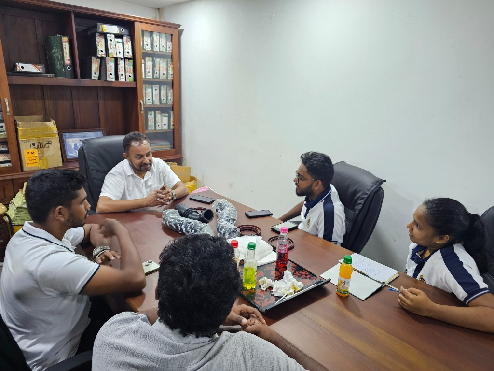
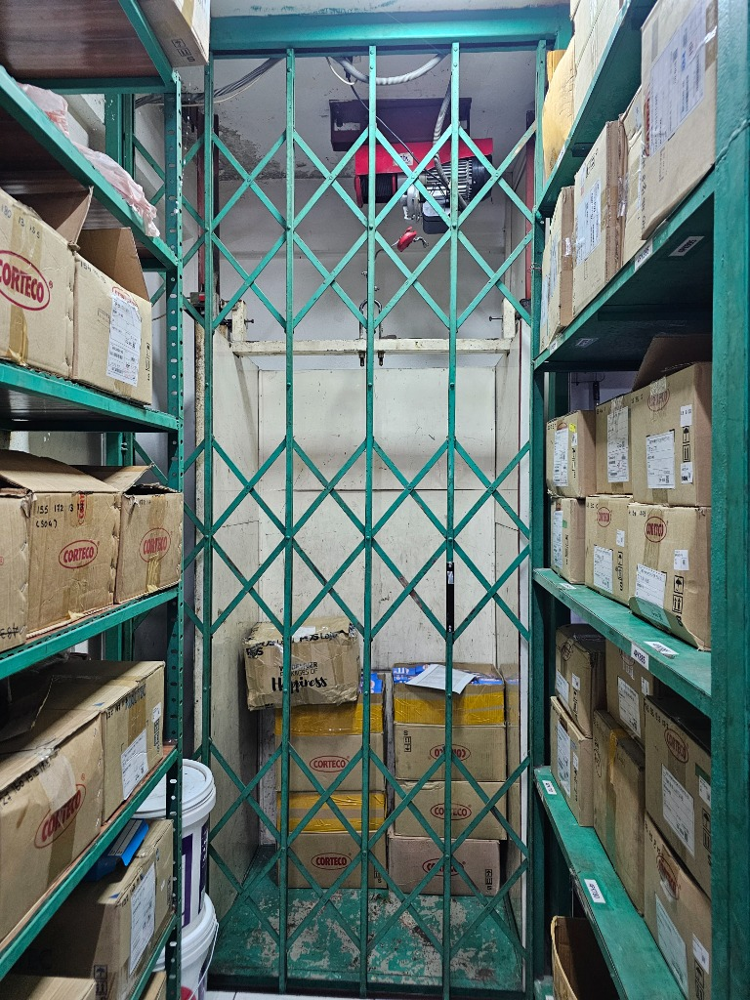
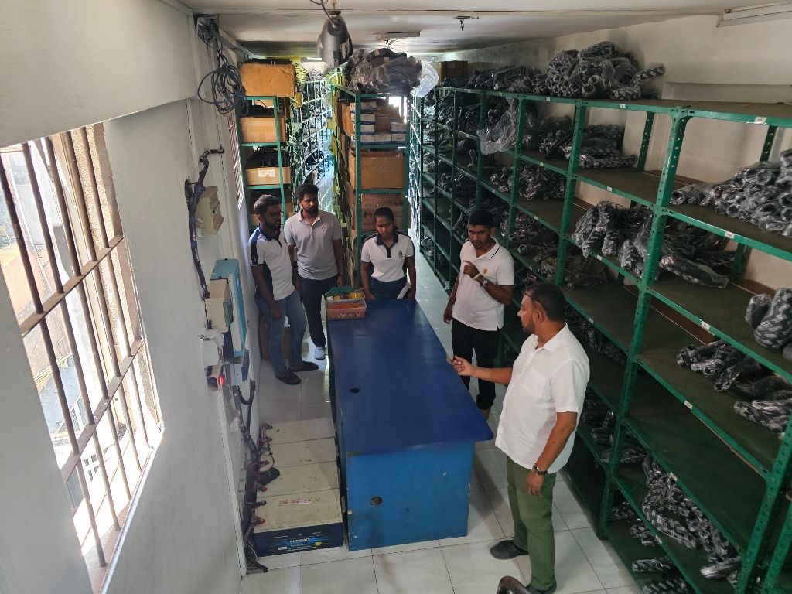
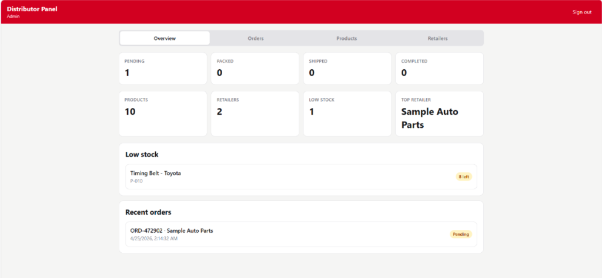
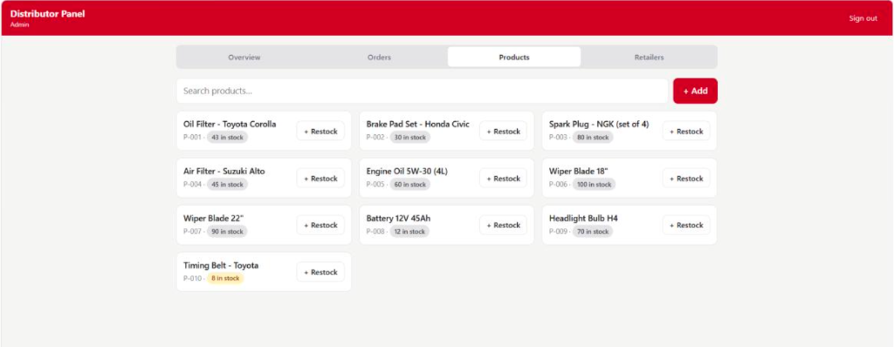
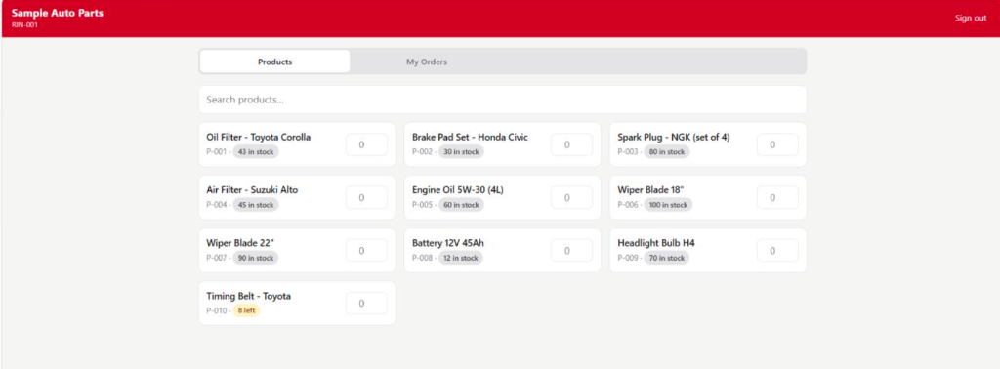
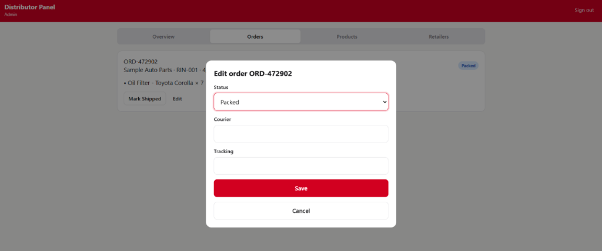

The Geethani Motors Project
When you think of the automotive spare parts industry, you probably picture grease, gears, and gasoline. But behind the scenes, the real engine driving the industry is information flow. Recently, my team and I tackled a massive supply chain bottleneck for Geethani Motors, a local supplier specializing in rubber and metal vehicle seals.
What started as an academic deep-dive into SME logistics quickly turned into a real-world engineering challenge. We discovered a system bogged down by rigid constraints, manual processes, and a surprising amount of waste. Here is how we engineered a turnaround.




The 10,000-Unit Headache
Geethani Motors was facing a classic supply chain trap. Rubber seals have a finite shelf life. If they sit in a warehouse too long, they degrade. Yet, Geethani was experiencing a frustrating 10% inventory wastage rate.
Why? It came down to a lack of negotiation power and poor forecasting. International manufacturers were enforcing strict Minimum Order Quantities (MOQs) of 10,000 units. If Geethani only needed 3,000 parts to meet local demand, they still had to buy 10,000. Coupled with a basic static-buffer reordering system, they were practically drowning in excess stock.
Worse still, there was a massive disconnect in the downstream distribution chain. B2B retailers were placing orders blindly, completely unaware of Geethani’s actual stock levels. This information asymmetry led to constant out-of-stock scenarios, unfulfilled orders, and heavy opportunity costs.
Building the Solution: A Tale of Two Dashboards
To bridge this gap, we knew we had to digitize their information flow without completely upending the internal processes their inventory managers were comfortable with. We designed a dual-dashboard system to bring real-time visibility to both sides of the supply chain.
1. The Retailer B2B Portal (The External Dashboard)
We built a lightweight, no-nonsense web portal for Geethani’s network of resellers. Instead of a clunky login process, verified retailers simply enter their Retailer Identification Number (RIN).
Once inside, they have instant, real-time visibility into the live stock of critical components—from Hiace rear hub seals to Tractor engine seals. Retailers can check exact quantities, input their desired order, and hit submit. No more guessing games, and no more lost sales from ordering out-of-stock items.


2. The Master Inventory Tracker (The Internal Dashboard)
On the flip side, we needed a robust backend for Geethani’s team. When a retailer hits "Submit" on the frontend, it instantly triggers an automated alert to the inventory manager and logs the request in a centralized master database.
This internal dashboard tracks the entire lifecycle of the order through a visual pipeline: Pending → Packed → Shipped. Once dispatched, courier and tracking details are logged. Crucially, we designed this system to assist, rather than replace, the inventory manager. Order quantities aren't blindly deducted by the algorithm; the manager retains manual control over the master stock deductions, ensuring the digital numbers always match the physical warehouse reality.
